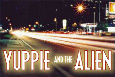

I didn't watch much TV in the 80s. I was too busy chasing skirt. But maybe you did. Square! Anyway, there were a
few shows I loved. And these ones were on television too.

This hard hitting cop show didn't run for too long, but it was great while it did. If I remember the premise,
the show featured a yuppie policeman and an alien policeman running amok in a down town
precinct, rife with all manner of social problems. The yuppie would try to defeat them using a
personal organizer and a pair of snappy loafers, while the alien would lose his temper and liquidize them using
policing methods best left to Alpha Centauri. It was all about fighting crime the hard way, in a $250,000
sports car and a UFO. Where are they now? The actor who played the yuppie, Morgan Daniels, was going to
be the next big thing. Unfortunately, the stupid tosser believed his own hype. He's currently doing the rounds
in Atlantic City and other small scale holiday resorts, and was convicted of possession of a dangerous animal.
The actor who played the Alien, although he was covered head to toe in latex and had five pairs wobbly ears,
went on to enjoy a successful career behind the cameras, as a film set catering man. It just goes to show, you never can tell!!!
This sitcom ran for three seasons, I think, although not with the original cast. The show mined the popular seam
of mainstream entertainment, the fish out of water. Only with a different three fish all in the wrong water. Or
something like that. Anyway, you remember how it went, a childless suburban couple went to the adoption agency
and came back with three unlikely adoptees. Firstly, a fully grown man, who looked like a young boy. It was
never explained why he looked so young, or why a fully grown man with an important job allowed himself to be
adopted, but it was really funny. Mr. Dawkins, the 'dad' of the house, would shout "go to your room" and Jimmy,
the youthful looking 35 year old bond trader would respond with "But I'm a 35 year old bond trader." Secondly, a
drunken tramp, who would slur and relieve himself in public and drink the cooking sherry. He was mainly set
against the third adoptee, the pyromaniac little girl, played by that girl who ended up marrying the governor.
Usually, the little girl would set fire to the couch, then the tramp would put it out. Then the tramp would be
rewarded with a little drink, then he'd spill the drink on the little guy who looked weirdly young, then the mum
of the house would burst into song, as her contract insisted on it. Then there'd be a group hug. In later
series, the girl was replaced by a talking horse. Remember the catchphrases "Not in my house!" "But I'm 35, I
just look young." "Can I have some mentholated spirits" "Can I have some mentholated spirits, a match and a rag,
along with some TNT and a set of working fuses, for my birthday." "Group hug."